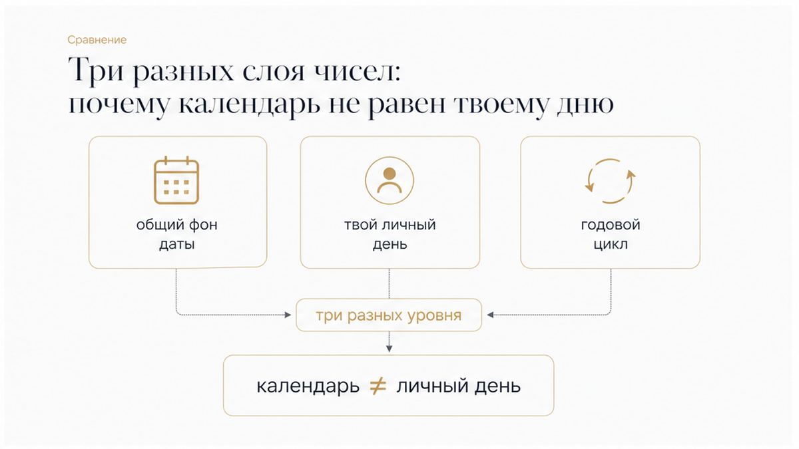
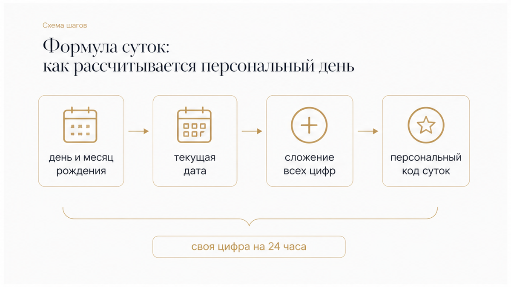
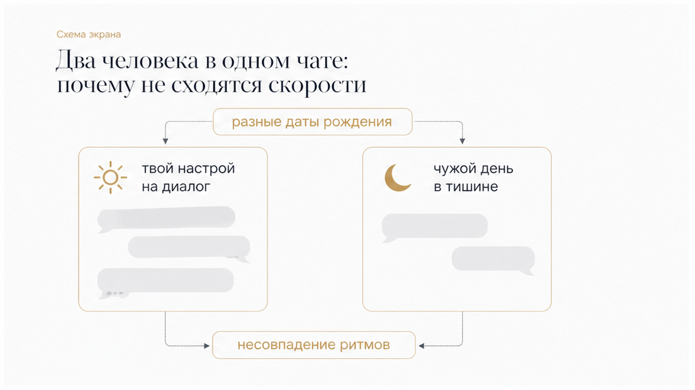

Палец в десятый раз обновляет застывший диалог, где висит метка «был в сети двадцать минут назад». В ленте соцсетей тем временем выскакивает бодрый нумерологический прогноз: «Четверг, 27 августа — день девятки, подведение итогов и завершение циклов». Рука сама тянется опереться на эту цифру. Кажется: раз дата общая для всего мира, то и ответ на вопрос, напишет ли он до полуночи, уже зашит в простой календарный код. Но как только ты пытаешься примерить общий прогноз на тишину в чате, расчёт мгновенно рассыпается.
Сразу к делу:
Общее число календарного четверга не отвечает за отдельный диалог. Универсальная цифра даты лишь задаёт общий суточный фон, а твоё личное число дня рассчитывается по индивидуальной дате рождения и действует ровно 24 часа. У твоего собеседника в том же чате суточный ритм может быть совершенно другим, поэтому требовать от него одинаковой скорости реакций бессмысленно.
Если пауза затянулась и нужно понять, что происходит между вами без иллюзий, карты Таро подсвечивают скрытую механику отношений точнее любых календарных обобщений. Вот три вопроса, которые возвращают ясность:
Чтобы быстро вернуть внутреннюю опору, выбери удобный формат:

Главная ловушка при чтении нумерологических подсказок — смешивать три совершенно разных уровня расчёта в одну кучу:
Когда в прогнозе пишут о «дне под знаком девятки», речь идёт исключительно о сумме цифр на листке календаря. Твой персональный день в этот же четверг может оказаться единицей, пятёркой или восьмёркой.

В практической нумерологии классическим стандартом суточного расчёта считается сложение дня и месяца рождения с интересующей датой:
Ты складываешь день своего рождения, месяц рождения, а также день, месяц и год сегодняшней даты. Полученная сумма последовательно сворачивается до однозначного числа от 1 до 9.
К примеру, если день твоего рождения — 9 августа, то для даты 27.08.2026 расчёт выглядит так: 9 + 8 + 2 + 7 + 0 + 8 + 2 + 0 + 2 + 6 = 44, что даёт 4 + 4 = 8. Личное число дня — 8. Это энергия концентрации на делах, практичности и конкретных результатах, несмотря на то, что общий календарный фон четверга проходит под девяткой.
Существуют и другие нумерологические школы — например, система вложенных циклов через личный месяц или расчёты с включением полного года рождения. Главное правило: не смешивать разные подходы в одном расчёте, иначе итоговая цифра потеряет всякий смысл.

В любом диалоге участвуют двое. Даже если ты рассчитала своё личное число дня и понимаешь свой настрой, у твоего собеседника другая дата рождения — а значит, и совершенно другой суточный ритм.
Если у тебя сегодня активная тройка, требующая живого общения и быстрых реакций, мужчина может проживать день семёрки — время внутренней тишины, погружения в свои мысли и нежелания вести пустые переписки. Либо его день проходит под четвёркой, когда всё внимание забирает рутина, дедлайны и рабочие обязанности.
Личное число дня не залезает в чужую голову и не даёт механического ответа «да/нет» на вопрос, вспыхнет ли экран сообщением. Оно описывает лишь преобладающий темп и фокус внимания человека на протяжении 24 часов. Чтобы разговор сложился, важно учитывать ритм обоих людей, а не ждать, что другой человек подстроится под твоё восприятие времени.
Каждое личное число дня задаёт своё направление внимания на ближайшие сутки:
Расчёт личного числа дня отлично объясняет, почему в конкретные сутки темп общения не совпадает. Но суточная цифра не может показать, что человек чувствует на самом деле и куда движутся ваши отношения.
Если ты устала гадать по календарным знакам и хочешь увидеть реальное положение дел без иллюзий, карты Таро дадут чёткий и честный ориентир:
Определённость возвращает спокойствие — сделай простой шаг, чтобы перестать ждать вслепую.